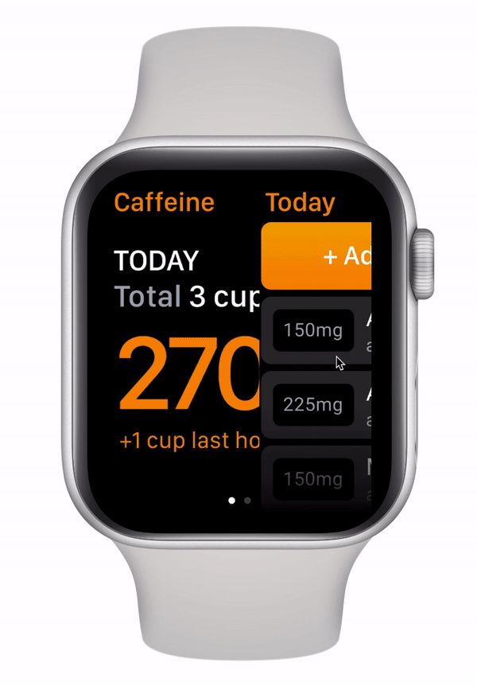
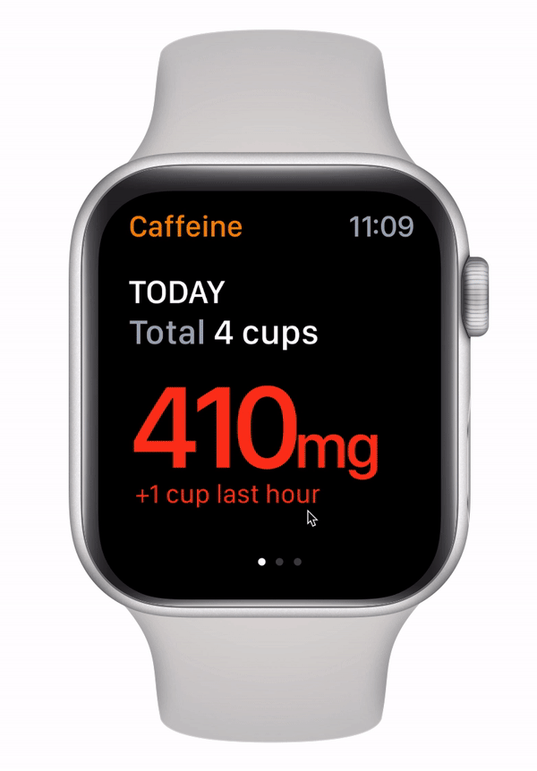
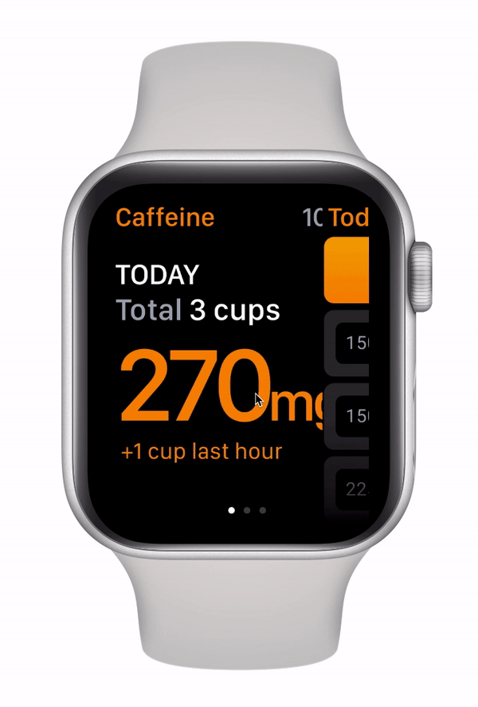

Onboarding
Answer a questionare and find your target daily coffee consumption.

Add drinks
Add your daily coffee consumption by drink and size.

Suggestions
Reach your targeted caffeine limit? Find healthy alternatives.

Weekly insights
Preview your previous week's caffeine consumption.
